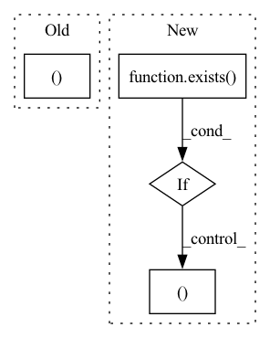

Pattern ID :4942
Before Change
output = t5(input_ids = input_ids, attention_mask = attn_mask)
encoded_text = output.last_hidden_state.detach()
return encoded_text, attn_mask.bool()
After Change
attn_mask = attn_mask.bool()
if not exists( output_device) :
return encoded_text, attn_mask
encoded_text.to(output_device)
attn_mask.to(output_device)
In pattern: SUPERPATTERN
Frequency: 4
Non-data size: 4
Instances Fragment ID: 17382345
Project Name: lucidrains/parti-pytorch
Commit Name: e7381f221782a392e5706724a4c72df2b2d049f5
Time: 2022-06-24
Author: lucidrains@gmail.com
File Name: parti_pytorch/t5.py
M Class Name: AnonimousClass
N Class Name: AnonimousClass
M Method Name: t5_encode_text(3)
N Method Name: t5_encode_text(2)
M Parent Class:
N Parent Class:
M File Name: parti_pytorch/t5.py
N File Name: parti_pytorch/t5.py
M Start Line: 80
M End Line: 80
N Start Line: 55
N End Line: 88
Before Change
x,
context = None
):
b, c, h, w = x.shape
context = default(context, x)
qkv = (self.to_q(x), *self.to_kv(context).chunk(2, dim = 1))After Change
x = self.norm(x)
if exists( self.time_cond) :
assert exists(time)
scale, shift = self.time_cond(time).chunk(2, dim = -1)
x = (x * (scale + 1)) + shift
if has_context: Fragment ID: 17382347
Project Name: lucidrains/recurrent-interface-network-pytorch
Commit Name: 5cd08b2823cfe105785a525aea43a7396fea07e9
Time: 2022-12-24
Author: lucidrains@gmail.com
File Name: rin_pytorch/rin_pytorch.py
M Class Name: Attention
N Class Name: Attention
M Method Name: forward(4)
N Method Name: forward(3)
M Parent Class: nn.Module
N Parent Class: nn.Module
M File Name: rin_pytorch/rin_pytorch.py
N File Name: rin_pytorch/rin_pytorch.py
M Start Line: 149
M End Line: 161
N Start Line: 199
N End Line: 225
Before Change
tokens = torch.cat((text_emb, image_emb), dim = 1)
if exists(mask):
mask = F.pad(mask, (0, self.image_seq_len ), value = True)
out = self.transformer(tokens, mask = mask)
out = self.to_logits(out)After Change
tokens = self.text_emb(text)
tokens += self.text_pos_emb(torch.arange(text.shape[1], device = device))
if exists( image) and not is_empty(image):
is_raw_image = len(image.shape) == 4
if is_raw_image:
assert exists(self.vae), "VAE must be passed into constructor if you are to train directly on raw images"
image_logits = self.vae(image, return_logits = True)
codebook_indices = image_logits.argmax(dim = 1).flatten(1)
image = codebook_indices
image_emb = self.image_emb(image)
image_emb += self.image_pos_emb(torch.arange(image.shape[1], device = device))
tokens = torch.cat((tokens, image_emb), dim = 1)
if exists(mask):
mask = F.pad(mask, (0, image_emb.shape[1] ), value = True)
out = self.transformer(tokens, mask = mask)
logits = self.to_logits(out) Fragment ID: 17382346
Project Name: lucidrains/dalle-pytorch
Commit Name: 2b20d390cc211536b2061fc231ed2243bb1a35a2
Time: 2021-01-06
Author: lucidrains@gmail.com
File Name: dalle_pytorch/dalle_pytorch.py
M Class Name: DALLE
N Class Name: DALLE
M Method Name: forward(5)
N Method Name: forward(5)
M Parent Class: nn.Module
N Parent Class: nn.Module
M File Name: dalle_pytorch/dalle_pytorch.py
N File Name: dalle_pytorch/dalle_pytorch.py
M Start Line: 177
M End Line: 205
N Start Line: 235
N End Line: 268
Before Change
)
def forward(self, x):
b, c, h, w = x.shape
qkv = self.to_qkv(x).chunk(3, dim = 1)
q, k, v = map(lambda t: rearrange(t, "b (h c) x y -> b h c (x y)", h = self.heads), qkv)
After Change
h = self.heads
x = self.norm(x)
if exists( self.time_cond) :
assert exists(time)
scale, shift = self.time_cond(time).chunk(2, dim = -1)
x = (x * (scale + 1)) + shift
qkv = self.to_qkv(x).chunk(3, dim = -1) Fragment ID: 17382343
Project Name: lucidrains/recurrent-interface-network-pytorch
Commit Name: 5cd08b2823cfe105785a525aea43a7396fea07e9
Time: 2022-12-24
Author: lucidrains@gmail.com
File Name: rin_pytorch/rin_pytorch.py
M Class Name: LinearAttention
N Class Name: LinearAttention
M Method Name: forward(3)
N Method Name: forward(2)
M Parent Class: nn.Module
N Parent Class: nn.Module
M File Name: rin_pytorch/rin_pytorch.py
N File Name: rin_pytorch/rin_pytorch.py
M Start Line: 114
M End Line: 126
N Start Line: 136
N End Line: 157